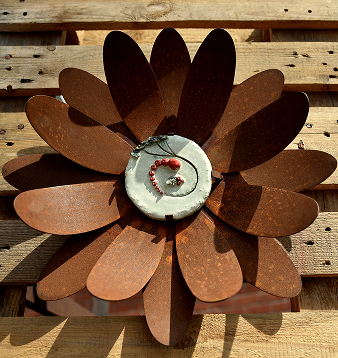
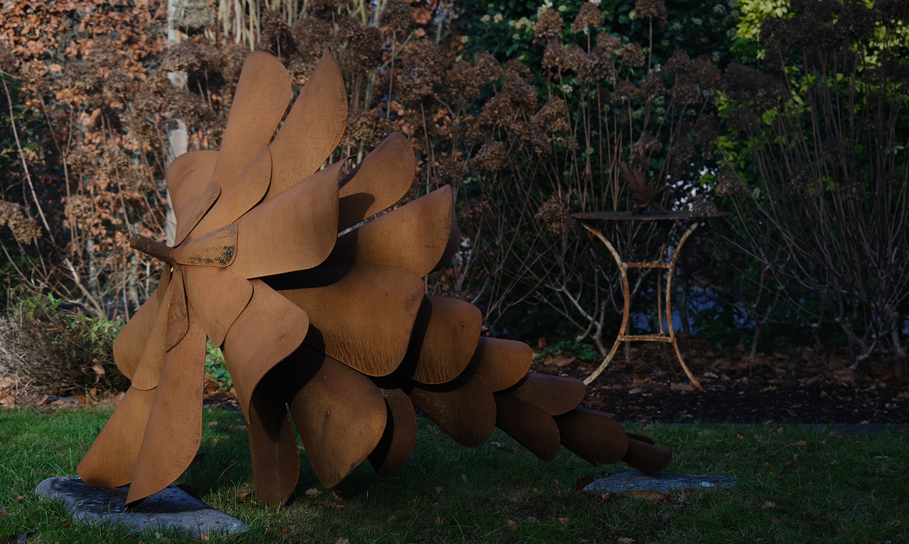
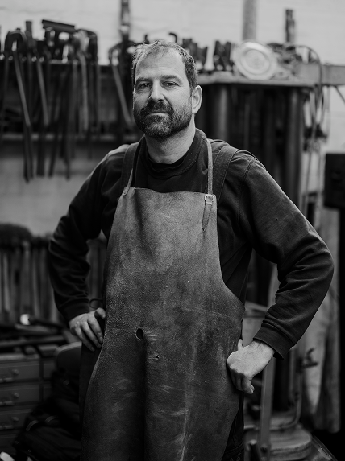
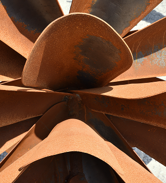
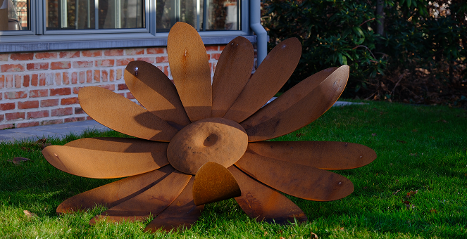
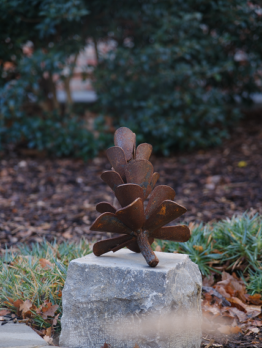
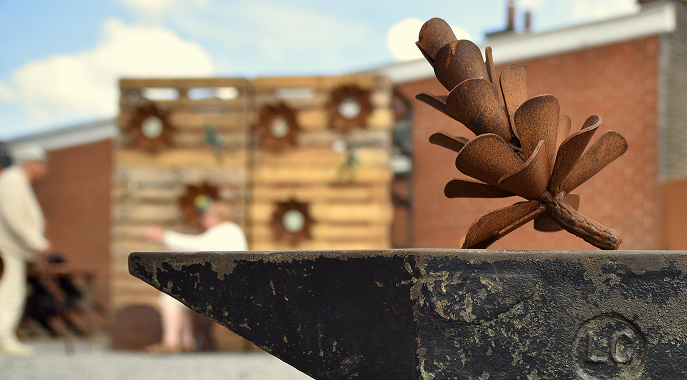
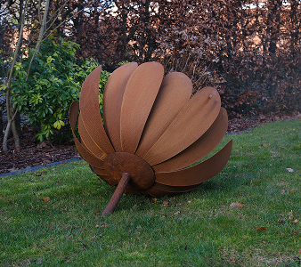
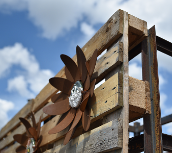
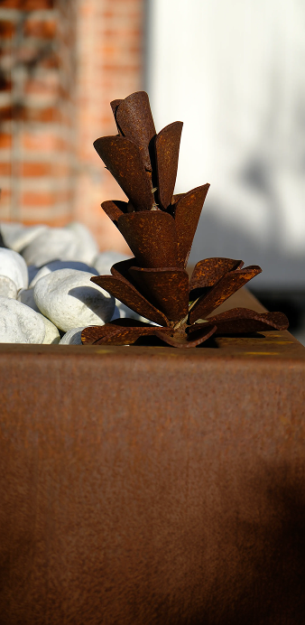

Lieven Van West
Creaties in cortenstaal

Over Lieven
Lieven Van West combineert zijn technische achtergrond als mechanicus bij UGent met een passie voor metaalbewerking. Dankzij een opleiding tot kunstsmid ontwikkelde hij een eigen stijl. Elk kunstwerk wordt met de hand vervaardigd uit cortenstaal, een materiaal dat door weer en tijd een warme, natuurlijke uitstraling krijgt.


Inspiratie
Bloemen, vruchten, bladeren en andere natuurlijke vormen zijn het vertrekpunt van zijn werk. Zijn sculpturen brengen rust en nodigen uit om vanuit verschillende hoeken te kijken. Voor Lieven is schoonheid niet perfectie, maar karakter. Elk werk krijgt door de omgeving waarin het staat een eigen leven.
Filosofie
Cortenstaal lijkt sterk en onveranderlijk, maar ontwikkelt zich voortdurend. Die evolutie weerspiegelt ook zijn visie op kunst: schoonheid ontstaat door tijd, geduld en aandacht. Zijn sculpturen zijn ontworpen om op te gaan in de natuur en tegelijk een subtiele blikvanger te vormen.

Galerie



